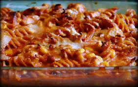

Chicken Parmesan Casserole
Home

The Chicken Parmesan Casserole is a easy dinner thats created with cooked chicken, pasta and crispy bread crumbs
which add a delicious twist to the standard homemade chicken parmesan.
This mouth watering recipe will take 50 minutes in total to create with 5 minutes prep and 45 minutes to create this fantasic meal.
The Chicken Parmesan Casserole is enough to fill up the entire family with 6 serving per recipe.
The nutritious value for each serving is that it contains 259 calories with 24g of calories, 11g fat and 39g carbs.
Ingredients
- 2 cups rotini pasta
- 12 ounces cooked chicken, cubed
- 1 cup shredded mozzarella cheese
- 2 cups marinara sauce
- ½ cup seasoned bread crumbs
- Gather all ingredients. Preheat the oven to 350 degrees F (175 degrees C).
- Fill a large pot with lightly salted water and bring to a rolling boil over high heat. Cook rotini in boiling water until tender yet firm to the bite, about 8 minutes. Drain.
- Stir together cooked rotini, chicken, and mozzarella cheese in a large casserole dish.
- Pour marinara sauce over pasta mixture; sprinkle with bread crumbs. Cover the dish with aluminum foil.
- Bake in the preheated oven until cheese is melted, about 35 minutes.
- Serve and enjoy.